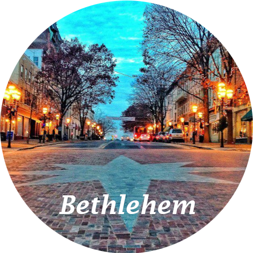

In my life, I've spent enough time in several places to call them home. I hope to show you a glimpse of my personal experience in each place through the pictures I've taken and some background information about each one. Click any of the icons below to learn more!
